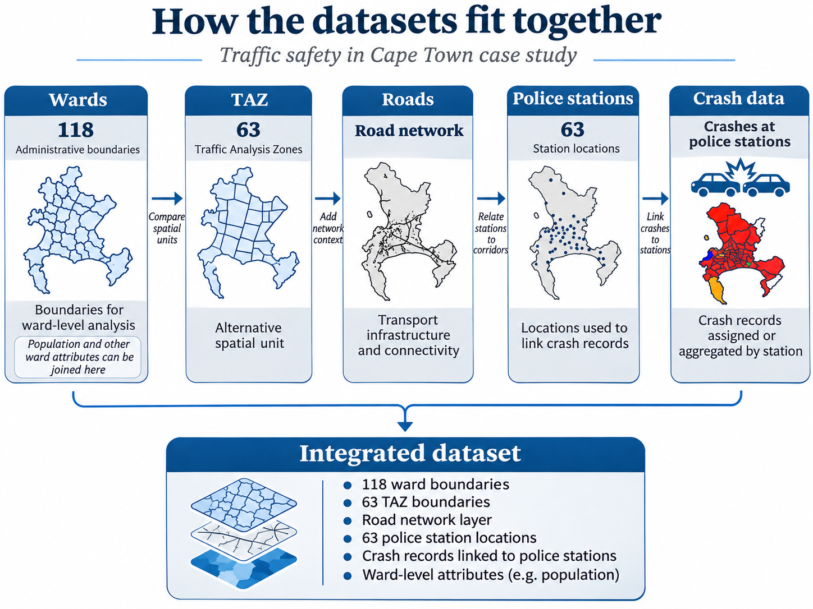
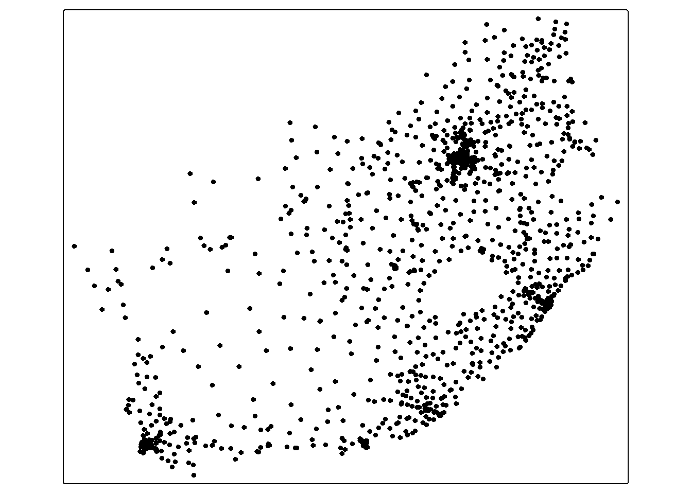
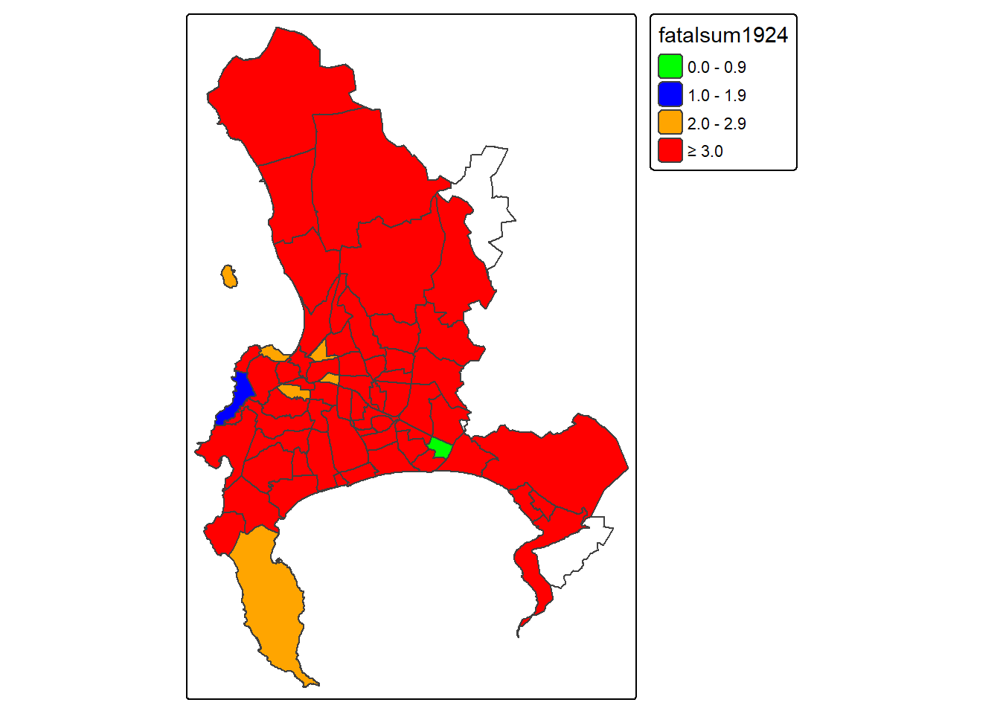
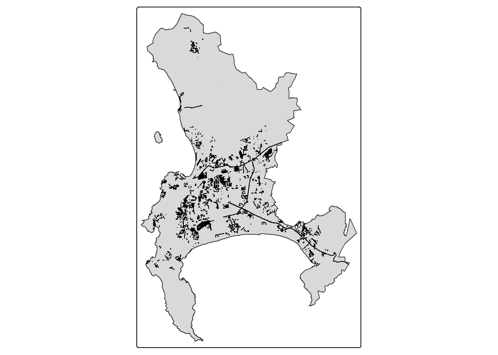
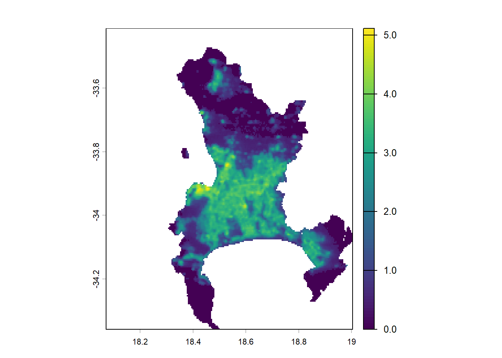

library(sf)
library(dplyr)
library(tidyr)
library(readr)
library(ggplot2)
library(osmdata) # OpenStreetMap
library(blackmarbler) # NASA Black Marble night-time lights
library(broom)
library(tmap)
library(stringr)
library(lubridate)
# terra, lubridate, MASS called with pkg:: (MASS::select masks dplyr::select)
sf_use_s2(FALSE)
crs_proj <- 32734 # UTM 34S: metres (Lo19 = EPSG:2048 also works)
data_dir <- params$data_dir
cache_dir <- file.path(data_dir, "cache"); dir.create(cache_dir, FALSE, TRUE)
cached <- function(name, expr) { # build once, reuse in the live session
f <- file.path(cache_dir, paste0(name, ".rds"))
if (file.exists(f)) return(readRDS(f))
x <- expr; saveRDS(x, f); x
}Sourcing and combining publicly available data in R
Traffic safety in Cape Town as a case study SASA 2026 · MDAG Workshop: Sourcing Multivariate Data
Thanks
Why combine sources?

A crash count on its own says little. To compare places we need:
- Where crashes happen: City of Cape Town crash records
- The units we report on: ward boundaries
- Who lives there: Stats SA ward-level census data
- Economic context: SARS / National Treasury spatial tax data
- Exposure and activity: OpenStreetMap roads, NASA night-time lights
Each source has its own
- spatial unit (points, lines, raster, polygons)
- time period and boundary vintage
- coverage: reported crashes, registered taxpayers, mapped roads
Where the data come from
| Data | Source | Spatial form | R tool | Website |
|---|---|---|---|---|
| Crashes | City of Cape Town | points (lon/lat) | readr, sf |
CoCT Ward Shapefile |
| Wards | City of Cape Town Open Data Portal / Municipal Demarcation Board | polygons | sf::st_read |
MDB SA Ward Shapefile |
| Ward population | Stats SA | csv file | readxl |
Stats SA Population by Ward |
| Road network | City of Cape Town Open Data Portal / Type road |
lines | sf::st_read |
CoCT Road network |
| Police station boundaries | SAPS | polygons and points | sf::st_read |
SAPS |
| Night lights | NASA Black Marble VNP46A4 (VIIRS) | raster | blackmarbler, terra |
See section NTL |
Habits to adopt: record the source, version, download date and licence for every dataset, and cache everything you download.
Data download for this workshop
They can be accessed from this google drive link
Setup
Configuration
ward_file <- file.path(data_dir, "MDB_Wards_2020.geojson")
crash_file <- file.path(data_dir, "Crash_Data_Statistics_2019_to_2024.geojson")
road_file <- file.path(data_dir, "TCT_Road_Centerline.geojson")
saps_file <- file.path(data_dir, "station_boundaries_points/station_points/Police_points.shp")
saps_zones_file <- file.path(data_dir, "station_boundaries_points/station_boundaries/Police_bounds.shp")
#crash_cols <- c(lon = "longitude", lat = "latitude", date = "date", severity = "severity")
census_file <- file.path(data_dir, "PP_Population Group_27-10-2025.xlsx")
nasa_bearer <- Sys.getenv("NASA_BEARER") # keep in .Renviron
ntl_file <-file.path(data_dir, "cache/ntl_tazs_2023.tif")Read in all the datasets
1. Boundaries
1.1. Ward shapefile
wards <- st_read(ward_file, quiet = TRUE) |>
st_make_valid() |> st_transform(crs_proj)
wards_cpt <- wards |> filter(District == "City of Cape Town") |> mutate(WardID = as.numeric(WardID))
wards_cpt$area_km2 <- as.numeric(st_area(wards_cpt)) / 1e6
city <- st_union(wards_cpt) |> st_as_sf()Wards are drawn to hold similar numbers of voters, not similar areas.
1.2. Ward population
ward_population = readxl::read_xlsx(census_file, sheet = "Wards") |> rename(WardID = Ward_Code)1.3. Merge Ward shapefile with Ward population
wards_cpt <- wards_cpt |>
left_join(
ward_population,
by = "WardID"
)ggplot(wards_cpt) +
geom_sf(aes(fill = area_km2), colour = "white", linewidth = 0.1) +
scale_fill_viridis_c(trans = "log10", name = "km²") +
theme_void()
wards_cpt |> mutate(popperarea = Total/area_km2)|>
ggplot() +
geom_sf(aes(fill = popperarea), colour = "white", linewidth = 0.1) +
scale_fill_viridis_c(name = "Total population") +
theme_void()
2. Police station zones and locations
2.1. Read and parse
policestations_zones_sa <- st_read(saps_zones_file)|>
st_transform(crs_proj) Reading layer `Police_bounds' from data source
`C:\Users\01438475\Downloads\SASA_2026_workshop\SASAworkshopGithubPage\data\station_boundaries_points\station_boundaries\Police_bounds.shp'
using driver `ESRI Shapefile'
Simple feature collection with 1172 features and 3 fields
Geometry type: MULTIPOLYGON
Dimension: XY
Bounding box: xmin: 16.45189 ymin: -34.83305 xmax: 32.89099 ymax: -22.12503
Geodetic CRS: WGS 84policestations_sa <- st_read(saps_file)|>
st_transform(crs_proj) Reading layer `Police_points' from data source
`C:\Users\01438475\Downloads\SASA_2026_workshop\SASAworkshopGithubPage\data\station_boundaries_points\station_points\Police_points.shp'
using driver `ESRI Shapefile'
Simple feature collection with 1172 features and 5 fields
Geometry type: POINT
Dimension: XY
Bounding box: xmin: 16.49218 ymin: -34.80059 xmax: 32.74348 ymax: -22.34331
Geodetic CRS: WGS 84tm_shape(policestations_sa)+tm_dots()
We would like this only for Cape Town
policestations_cpt <- policestations_sa[city, ]
policestations_zones_cpt <- policestations_zones_sa[policestations_cpt, ]
tm_shape(city)+tm_polygons()+
tm_shape(policestations_cpt)+tm_dots()
3. Crash data
3.1. Read and parse
crash_raw <- st_read(crash_file) |>
st_transform(crs_proj) |>
mutate(date = as.Date(lubridate::parse_date_time(
CRASH_DATE, orders = c("Ymd HMS", "Ymd HM", "Ymd", "dmY HMS", "dmY HM", "dmY"))),
year = as.integer(format(date, "%Y")),
month_year = floor_date(CRASH_DATE, unit = "month"))Reading layer `Crash_Data_Statistics_2019_to_2024' from data source
`C:\Users\01438475\Downloads\SASA_2026_workshop\SASAworkshopGithubPage\data\Crash_Data_Statistics_2019_to_2024.geojson'
using driver `GeoJSON'
replacing null geometries with empty geometries
Simple feature collection with 377996 features and 18 fields (with 377996 geometries empty)
Geometry type: GEOMETRYCOLLECTION
Dimension: XY
Bounding box: xmin: NA ymin: NA xmax: NA ymax: NA
Geodetic CRS: WGS 84You will notice that we have police stations such as:
- ATLANTIS TRAFFIC
- Bellville Traffic
- CT Metro Police Spec Ops
- DIV2 METRO SOUTH
- Mfuleni Satellite
- Bonteheuwel Satellite
- SPECIAL OPERATIONS
These are not necessarily independent SAPS police station jurisdictions. For example, you may decide that crashes recorded under Mfuleni Satellite should be assigned to the Mfuleni SAPS boundary, but this requires verifying the reporting or jurisdictional relationship.
I would not automatically assign a traffic department to a nearby SAPS station, because the station recording a crash is not necessarily the station whose jurisdiction contains the crash location.
3.2. Clean police station names
3.2.1. Create a function to standardise the names
clean_station <- function(x) {
x %>%
str_to_upper() %>%
str_remove_all("\\bSAPS\\b") %>%
str_replace_all("[^A-Z0-9]", "") %>%
str_trim()
}This handles variations such as Sea Point Saps vs SEA POINT, and Lingelethu West vs LINGELETHU-WEST.
3.2.2. Add manual spelling corrections
Based on the names, these are the main differences that need correcting:
station_corrections <- c(
"ELSIESRIVIER" = "ELSIESRIVER",
"GUGULETU" = "GUGULETHU",
"PHILLIPIEAST" = "PHILIPPIEAST"
)3.2.3. Match crashes to the shapefile
# Clean crash station names
crash_raw <- crash_raw %>%
mutate(
station_clean = clean_station(POLICE_STATION),
station_clean = recode(
station_clean,
!!!station_corrections
)
)
policestations_cpt <- policestations_cpt %>%
mutate(
station_clean = clean_station(COMPNT_NM)
)
# Match names using the shapefile as reference
station_lookup <- crash_raw |>
distinct(POLICE_STATION, station_clean) %>%
left_join(
policestations_cpt %>%
st_drop_geometry() %>%
select(COMPNT_NM, station_clean),
by = "station_clean",
relationship = "many-to-one"
)This should produce a lookup table connecting every original crash station name to its corresponding shapefile name.
3.2.4. Check unmatched stations
station_lookup %>%
filter(is.na(COMPNT_NM)) %>%
select(POLICE_STATION) POLICE_STATION
1 DIV8 BLAAUWBERG TRAFFIC
2 Bellville Traffic
3 GOODWOOD TRAFFIC
4 SPECIAL OPERATIONS
5 DIV2 METRO SOUTH
6 PGWC SAPS
7 DIV7 BONTEHEUWEL
8 METRO WEST
9 Bonteheuwel Satellite
10 DIV1 SPEN / Hillstar Traffic
11 Mfuleni Satellite
12 ATLANTIS TRAFFIC
13 AIRPORT SAPS
14 Browns Farm SAPS
15 CT Metro Police Spec Ops
16 Hermanus SAPSBased on names in the crash data, you should mainly find traffic departments, metro police categories, and satellite stations.
For example, I would expect these to remain unmatched:
| Crash station name | Reason |
|---|---|
| AIRPORT SAPS | No corresponding area in shapefile |
| ATLANTIS TRAFFIC | Traffic department |
| Bellville Traffic | Traffic department |
| Bonteheuwel Satellite | Satellite station |
| CT Metro Police Spec Ops | Metro police |
| DIV2 METRO SOUTH | Metro police division |
| Mfuleni Satellite | Satellite station |
| PGWC SAPS | Not a station boundary name |
| SPECIAL OPERATIONS | Not a station boundary name |
Other special reporting categories may also remain unmatched.
3.2.5. Assess the proportion of matched crashes
crash_matched <- crash_raw |>
left_join(
station_lookup |>
select(POLICE_STATION, COMPNT_NM),
by = "POLICE_STATION",
relationship = "many-to-one"
)
crash_matched |>
summarise(
total = n(),
matched = sum(!is.na(COMPNT_NM)),
unmatched = sum(is.na(COMPNT_NM)),
percent_matched = round(
100 * matched / total, 2
)
)Simple feature collection with 1 feature and 4 fields (with 1 geometry empty)
Geometry type: GEOMETRYCOLLECTION
Dimension: XY
Bounding box: xmin: NA ymin: NA xmax: NA ymax: NA
Projected CRS: WGS 84 / UTM zone 34S
total matched unmatched percent_matched geometry
1 377996 368601 9395 97.51 GEOMETRYCOLLECTION EMPTYcrash_clean <- crash_matched |>
filter(!is.na(COMPNT_NM))3.2.6. Aggregate crashes and then join to the spatial boundaries
If your objective is to calculate crashes per SAPS jurisdiction per month:
crashes_by_station_month <- crash_clean |>
group_by(COMPNT_NM, month_year)|>
summarise(fatalsum = sum(FATAL),
serioussum = sum(SERIOUS),
slightsum = sum(SLIGHT),
noinjurysum = sum(NO_INJURIES),
totalsum = sum(FATAL+SERIOUS+SLIGHT+NO_INJURIES))
table(crashes_by_station_month$month_year)
2019-01-01 2019-02-01 2019-03-01 2019-04-01 2019-05-01 2019-06-01 2019-07-01
62 62 62 62 62 62 62
2019-08-01 2019-09-01 2019-10-01 2019-11-01 2020-01-01 2020-02-01 2020-03-01
62 62 62 62 62 62 61
2020-04-01 2020-05-01 2020-06-01 2020-07-01 2020-08-01 2020-09-01 2020-10-01
60 62 62 62 62 61 62
2020-11-01 2020-12-01 2021-01-01 2021-02-01 2021-03-01 2021-04-01 2021-05-01
62 62 62 62 62 62 62
2021-06-01 2021-07-01 2021-08-01 2021-09-01 2021-10-01 2021-11-01 2021-12-01
62 62 62 62 62 62 62
2022-01-01 2022-02-01 2022-03-01 2022-04-01 2022-05-01 2022-06-01 2022-07-01
62 62 62 62 62 62 62
2022-08-01 2022-09-01 2022-10-01 2022-11-01 2022-12-01 2023-01-01 2023-02-01
62 62 62 62 62 62 62
2023-03-01 2023-04-01 2023-05-01 2023-06-01 2023-07-01 2023-08-01 2023-09-01
62 62 62 62 62 62 62
2023-10-01 2023-11-01 2023-12-01 2024-01-01 2024-02-01 2024-03-01 2024-04-01
62 62 61 63 63 62 63
2024-05-01 2024-06-01 2024-07-01 2024-08-01 2024-09-01 2024-10-01 2024-11-01
63 63 63 63 63 63 63 It is clear that some months we don’t have any data for some stations and for 2019-12-1 2019 December data is missing for all stations. If we are preparing a balanced panel data, then we need to fix this.
crashes_by_station_month <- crashes_by_station_month |>
st_drop_geometry() |>
ungroup() |>
complete(
COMPNT_NM,
month_year = seq(
min(month_year, na.rm = TRUE),
max(month_year, na.rm = TRUE),
by = "month"
)
) |>
arrange(COMPNT_NM, month_year)We could impute the 2019 December values with a centred moving average however this would mean that we assume that crash counts change relatively smoothly between November and January. We all know that in fact December may have a distinct seasonal pattern in Cape Town, particularly because of holidays and increased travel activity.
For that reason, we might also need to consider estimating December 2019 using the average of December crash counts from adjacent years (e.g., December 2018 and December 2020), or a seasonal model.
For our analysis, I would compare the centred moving average with a seasonal estimate, rather than automatically assuming December behaves like November and January. Performing a sensitivity analysis to assess whether the imputation changes our main results is key here.
crashes_by_station_month <- crashes_by_station_month |>
ungroup() |>
group_by(COMPNT_NM) |>
arrange(month_year, .by_group = TRUE) |>
mutate(
across(
c(fatalsum, serioussum, slightsum, noinjurysum),
~ {
x <- if_else(
month_year != as.Date("2019-12-01") & is.na(.x),
0,
as.numeric(.x)
)
if_else(
month_year == as.Date("2019-12-01") & is.na(x),
round((lag(x) + lead(x)) / 2),
x
)
},
.names = "imp.{.col}"
)
) |>
mutate(
imp.totalsum = imp.fatalsum + imp.serioussum +
imp.slightsum + imp.noinjurysum
) |>
ungroup()
police_crashes_sf <- crashes_by_station_month |>
left_join(
policestations_zones_cpt,
by = "COMPNT_NM"
) |>
st_as_sf()|> st_transform(crs_proj)
# Check all is correctly matched:
tab = table(police_crashes_sf$station_clean.x,police_crashes_sf$station_clean.y)
sum(tab) - sum(diag(tab)) # this should be zero[1] 0rm(tab)tm_shape(city)+tm_polygons(fill="white")+
police_crashes_sf |>group_by(COMPNT_NM)|>mutate(fatalsum1924 = sum(imp.fatalsum)) |>
tm_shape() + tm_polygons( fill = "fatalsum1924",
size = 0.5,
fill.scale = tm_scale_intervals(
style = "fixed",
breaks = c(0, 1, 2, 3, Inf),
values = c(
"green",
"blue",
"orange",
"red"
),interval.closure = "left"
))
One methodological concern: This map represents crashes attributed to each reporting police station, not necessarily crashes that physically occurred within its jurisdiction. If your crash dataset contains actual crash coordinates, spatially joining those points to the SAPS polygons would provide a more geographically accurate measure of crashes per police station area.
4. Road network
road_network <- st_read(road_file) |>
st_transform(crs_proj)Reading layer `TCT_Road_Centerline' from data source
`C:\Users\01438475\Downloads\SASA_2026_workshop\SASAworkshopGithubPage\data\TCT_Road_Centerline.geojson'
using driver `GeoJSON'
Simple feature collection with 110176 features and 34 fields
Geometry type: MULTILINESTRING
Dimension: XY
Bounding box: xmin: 18.31945 ymin: -34.35701 xmax: 18.97671 ymax: -33.47453
Geodetic CRS: WGS 84tm_shape(city)+tm_polygons()+tm_shape(road_network[road_network$ROAD_TYPE %in% c("Freeway","Avenue"),])+tm_lines()
5. Night-time lights with blackmarbler
Night-time lights (ntl-s) are a proxy for activity, which matters at night, when residents are not where the traffic is. The easiest way to get ntl data is the blackmarbler package from the World Bank. It downloads NASA’s Black Marble VIIRS night-time lights for any area you give it and crops them to that area. Below are the steps in full:
- Get a NASA Earthdata token (free, once)
- Register at urs.earthdata.nasa.gov.
- Go to your profile and generate a new token. Ensure that select EULAs are accepted. Please see the instructions here: Blackmarbler Github page
- Save the token in your
.Renvironfile so it never appears in your code. You can open the file withusethis::edit_r_environ()and then save it as follows:
NASA_BEARER=eyJ0eXAiOiJKV1Qi...
Restart R afterwards. Tokens expire after a few months, so generate a fresh one if it doesn’t work.
5.1. Using TAZs
#roi_tazs <- policestations_zones_cpt |>
# st_transform(4326) |> # blackmarbler needs lon/lat
# st_make_valid() |>
# st_as_sf()
#st_crs(roi_tazs)$epsg # should be 4326
#st_is_valid(roi_tazs) # should be TRUE
#nchar(Sys.getenv("NASA_BEARER")) > 0 # check the token loaded (restart R after editing .Renviron)
#ntl_tazs_2023 <- bm_raster(roi_sf = roi_tazs,
# product_id = "VNP46A4",
# date = 2023,
# bearer = Sys.getenv("NASA_BEARER"))
#dir.create("data/cache", recursive = TRUE, showWarnings = FALSE)
#terra::writeRaster(ntl_tazs_2023, "data/cache/ntl_tazs_2023.tif", overwrite = TRUE)Since the above code might take a while to setup, we will first read in the cached .tif, which is saved already in the data/cache/ntl_city_2023.tif .
ntl_tazs_2023 <- terra::rast(ntl_file)
terra::hasValues(ntl_tazs_2023) # should be TRUE[1] TRUEterra::plot(log1p(ntl_tazs_2023))
Why log1p(x)? Becuase it computes log(1 + x) and it works on rasters as well. We use it for the map because night-time light values are very skewed. Most of the city is dim. Suburbs, the mountain and farmland have values near 0. A few pixels are very bright. The CBD, the port and the airport can be hundreds of times brighter.
On the raw scale those bright pixels use up most of the colour scale, and everything else looks the same dark colour. A log scale spreads the values out so you can see differences between ordinary neighbourhoods.
Also, a plain log() doesn’t work here, because many pixels are exactly 0 (dark areas such as the ocean or Table Mountain), and log(0) is -Inf. Adding 1 fixes that.
The brightest spots are the CBD, port and the airport. The N1 and N2 run east from the centre, and Atlantis is the cluster to the north.
ntl_tazs_2023 <- terra::mask(ntl_tazs_2023, terra::vect(st_transform(city, 4326)))
terra::plot(log1p(ntl_tazs_2023), axes = FALSE);plot(st_geometry(st_transform(policestations_zones_cpt, 4326)), add = TRUE, border = "white", lwd = 0.2)5.2. How to use this light information in our crash analysis
We can use it in two ways:
- As an exposure denominator: crashes per unit of light. Residents show where people sleep. Light shows where activity happens: the CBD, the airport, the N2 corridor and Bellville.
- As a covariate in the model (
log(ntl_mean)), as an activity proxy alongside other variables.
But also, we need to keep in mind that light is not the same as people. Densely populated areas such as Khayelitsha and Mitchells Plain (south-east, near False Bay) are less bright than their population would suggest, while the airport and port are very bright with almost no residents.
In order to achieve this, we will create a function called summarise_zones() function that would give two numbers per ward:
ntl_mean: average brightness, meaning how intensely lit the ward is.ntl_sum: total light, meaning the overall amount of activity. It grows with ward size.
summarise_zones <- function(zones) {
zones <- zones |>
st_transform(32734) |>
mutate(.zid = row_number())
crashes_proj <- police_crashes_sf |>
st_transform(st_crs(zones)) |>
filter(!st_is_empty(geometry))
crash_summary <- police_crashes_sf |>
sf::st_drop_geometry() |>
group_by(COMPNT_NM, month_year) |>
summarise(
fatalsum = sum(imp.fatalsum, na.rm = TRUE),
serioussum = sum(imp.serioussum, na.rm = TRUE),
slightsum = sum(imp.slightsum, na.rm = TRUE),
noinjurysum = sum(imp.noinjurysum, na.rm = TRUE),
totalsum = sum(imp.totalsum, na.rm = TRUE),
.groups = "drop"
)
# 2. Road length
roads_proj <- road_network |>
st_transform(st_crs(zones))
rl <- st_intersection(
roads_proj,
zones |> select(COMPNT_NM)
) |>
mutate(
km = as.numeric(st_length(geometry)) / 1000
) |>
st_drop_geometry() |>
group_by(COMPNT_NM) |>
summarise(
road_km = sum(km, na.rm = TRUE),
.groups = "drop"
)
# 3. Nighttime lights
ex <- terra::extract(
ntl_tazs_2023,
terra::vect(st_transform(zones, terra::crs(ntl_tazs_2023))),
exact = TRUE
)
names(ex)[2] <- "val"
nl <- ex |>
filter(!is.na(val)) |>
group_by(.zid = ID) |>
summarise(
ntl_mean = weighted.mean(val, fraction),
ntl_sum = sum(val * fraction),
.groups = "drop"
)
# 4. Combine everything
zones |>
mutate(
area_km2 = as.numeric(st_area(geometry)) / 1e6
) |>
left_join(crash_summary, by = "COMPNT_NM") |>
left_join(rl, by = "COMPNT_NM") |>
left_join(nl, by = ".zid") |>
mutate(
road_km = coalesce(road_km, 0)
)
}
taz_df <- summarise_zones(policestations_zones_cpt)Points, lines and rasters can be re-aggregated to any zones. Census and tax tables cannot.
5.3. Merge taz_df with the population data
- Extract the unique TAZ polygons
taz_unique <- taz_df |>
select(COMPNT_NM)|>
unique()- Calculate the intersection with wards
taz_ward_intersection <- st_intersection(
taz_unique |> select(COMPNT_NM),
wards_cpt |> select(WardNo)
)taz_ward_intersection <- taz_ward_intersection |>
mutate(
overlap_km2 = as.numeric(st_area(geometry)) / 1e6
) |>
left_join(
wards_cpt |>
st_drop_geometry() |>
select(WardNo, ward_area_km2 = area_km2),
by = "WardNo"
) |>
mutate(
weight = overlap_km2 / ward_area_km2
)- Calculate the population per TAZ
taz_summary <- taz_ward_intersection |>
st_drop_geometry() |>
left_join(
wards_cpt |>
st_drop_geometry() |>
transmute(
WardNo,
population = parse_number(as.character(Total))
),
by = "WardNo"
) |>
group_by(COMPNT_NM) |>
summarise(
population = sum(population * weight, na.rm = TRUE),
.groups = "drop"
)Add this information to our taz_df
taz_df <- taz_df |> left_join(
taz_summary, by = "COMPNT_NM"
)Take-home checklist
- Provenance: record the source, version, download date and licence. Cache every download.
- Vintage: ward boundaries change (2011 → 2016 → 2021). Join only data that use the same vintage.
- Geocoding: check missing coordinates, heaping and points on boundaries before aggregating.
- Exposure: choose the denominator for the question, and report results for more than one.
- MAUP: if the data allow it, repeat the analysis at another scale and with other zones.
- Representativeness: crash records count reported crashes, tax data cover registered taxpayers, and OSM coverage depends on volunteers.
Thank you
Dr. Şebnem Er, University of Cape Town
Code: topic1_slides.qmd